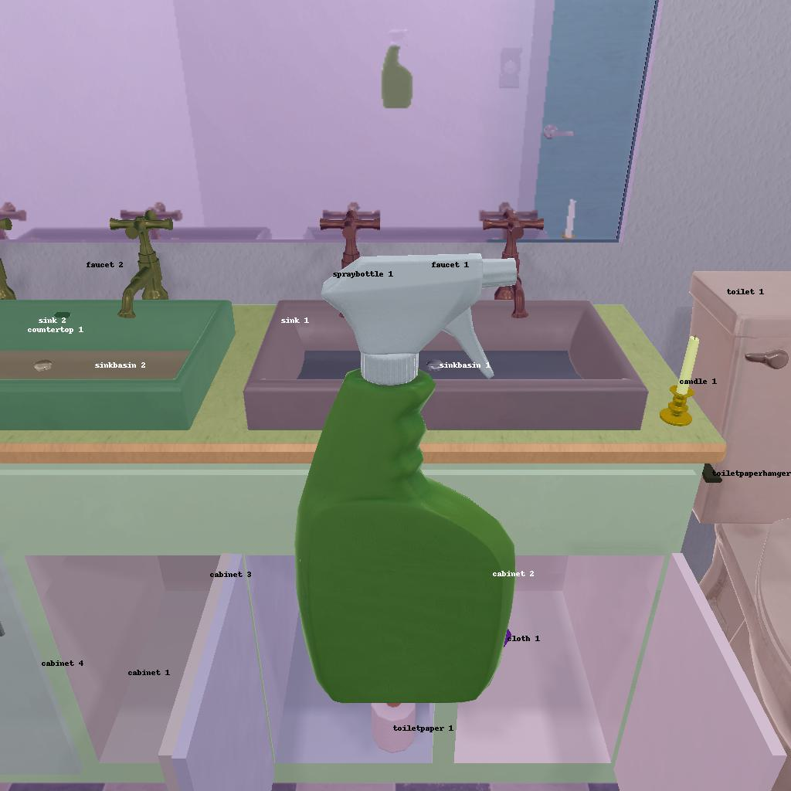

---------------------------------------------------------task: 9---------------------------------------------------------
--------------------------------------------------------------------------------------------------------------------------------------------------------------------
--------------------------------------------------------------------------------------------------------------------------------------------------------------------
Step:--------------------------------------------------------------------------19-------------------------------------------------------------------------------
----------------------------------------
VLM Prompt:
Image1:
**Instruction**
1. Analyze the provided image to identify all visible household objects, focusing on those relevant to the task description "put a soapbottle in toilet."
2. Use the analysis of the image and the task hint "The agent must find an object of the desired type, pick it up, find the correct location to place it, and put it down there." to answer the question: what is the most reasonable action in the choices for the task description "put a soapbottle in toilet"?
4. Decide and write the answer using the template: The answer is: (i): , where i is the real number. If there is no desired object in the image, search every place based on **Initial Observation** to find the object. And if no one is exactly correct, choose a similar answer.
**Initial Observation**
You are in the middle of a room. Looking quickly around you, you can see bathtub (1), bathtubbasin (1), toilet (1), cabinet (1-4), sink (1-2), countertop (1), sinkbasin (1-2), toiletpaperhanger (1), towelholder (1), garbagecan (1), handtowelholder (1)
**Answer Choices**
(1): go to bathtub 1
(2): go to bathtubbasin 1
(3): go to toilet 1
(4): go to cabinet 2
(5): go to cabinet 3
(6): go to sink 1
(7): go to sink 2
(8): go to countertop 1
(9): go to cabinet 4
(10): go to sinkbasin 1
(11): go to sinkbasin 2
(12): go to toiletpaperhanger 1
(13): go to towelholder 1
(14): go to garbagecan 1
(15): go to handtowelholder 1
(16): close cabinet 1
(17): put spraybottle 1 in/on cabinet 1
(18): examine cabinet 1
**Answer**
Let's think step by step by following the instructions.
----------------------------------------
----------------------------------------
Original Response:
First, we need to identify all visible household objects relevant to the task description "put a soapbottle in toilet." In the image, we can see a spray bottle (spraybottle 1) on the sink, but no soap bottle is directly visible. The task requires finding an object of the desired type, which in this case is a soap bottle, not a spray bottle.
Based on **Initial Observation**, there's a mention of cabinets (1-4). It's common to store soap bottles in cabinets in a bathroom. Therefore, the most reasonable action would be to search the cabinets to find a soap bottle.
The answer is: (4): go to cabinet 2.
----------------------------------------
----------------------------------------
>>> Refine Original VLM Response and Get Pure Action: go to cabinet 2
----------------------------------------
-----------------------------------------------------------------
Running time: 6.48664927482605 seconds
Total Money: 2.950070000000001
-----------------------------------------------------------------
-----------------------------------------------------------------
Text Observation:You arrive at loc 4. The cabinet 2 is open. On the cabinet 2, you see a faucet 2, a faucet 1, a toiletpaper 1, a candle 1, and a cloth 1.
-----------------------------------------------------------------
UNSUCCEED